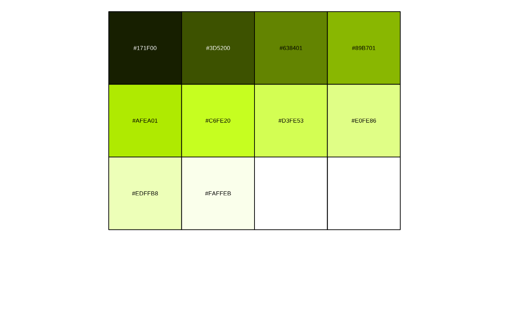

Generate a palette by linear interpolation. If a discrete palette is selected, colors are recycled to the length of the desired vector.
Examples
#View different interpolations of palettes
cesar_rampr("cesar_green_c") %>% scales::show_col()
cesar_rampr("cesar_green_c", n = 10) %>% scales::show_col()

cesar_rampr("cesar_green_c", n = 100)
#> [1] "#171F00" "#1A2300" "#1D2800" "#212C00" "#243100" "#283600" "#2B3A00"
#> [8] "#2F3F00" "#324400" "#364800" "#394D00" "#3D5200" "#405600" "#435B00"
#> [15] "#475F00" "#4A6400" "#4E6800" "#516D00" "#557100" "#587600" "#5C7A00"
#> [22] "#5F7F00" "#638401" "#668801" "#698D01" "#6D9101" "#709601" "#749B01"
#> [29] "#779F01" "#7BA401" "#7EA901" "#82AD01" "#85B201" "#89B701" "#8CBB01"
#> [36] "#8FC001" "#93C401" "#96C901" "#9ACE01" "#9DD201" "#A1D701" "#A4DC01"
#> [43] "#A8E001" "#ABE501" "#AFEA01" "#B1EB03" "#B3ED06" "#B5EF09" "#B7F10C"
#> [50] "#B9F30F" "#BBF411" "#BDF614" "#BFF817" "#C1FA1A" "#C3FC1D" "#C6FE20"
#> [57] "#C7FE24" "#C8FE29" "#C9FE2D" "#CAFE32" "#CBFE37" "#CDFE3B" "#CEFE40"
#> [64] "#CFFE45" "#D0FE49" "#D1FE4E" "#D3FE53" "#D4FE57" "#D5FE5C" "#D6FE60"
#> [71] "#D7FE65" "#D8FE6A" "#DAFE6E" "#DBFE73" "#DCFE78" "#DDFE7C" "#DEFE81"
#> [78] "#E0FE86" "#E1FE8A" "#E2FE8F" "#E3FE93" "#E4FE98" "#E5FE9C" "#E7FEA1"
#> [85] "#E8FEA5" "#E9FEAA" "#EAFEAE" "#EBFEB3" "#EDFFB8" "#EEFFBC" "#EFFFC1"
#> [92] "#F0FFC5" "#F1FFCA" "#F2FFCF" "#F4FFD3" "#F5FFD8" "#F6FFDD" "#F7FFE1"
#> [99] "#F8FFE6" "#FAFFEB"